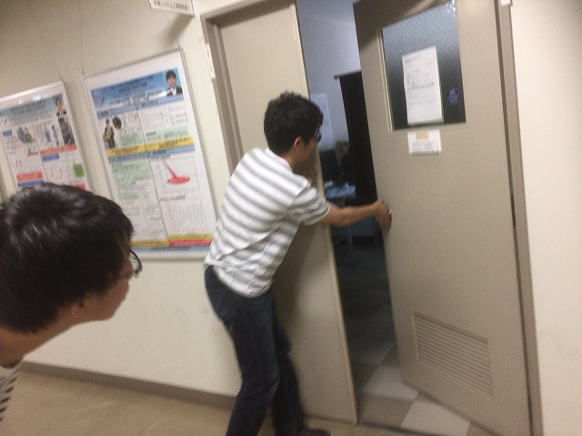
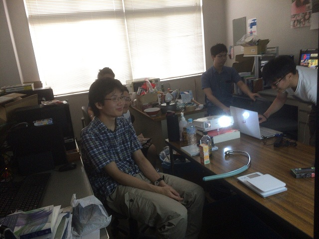
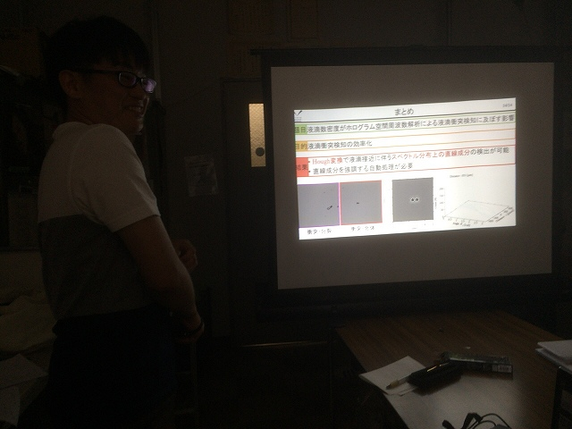
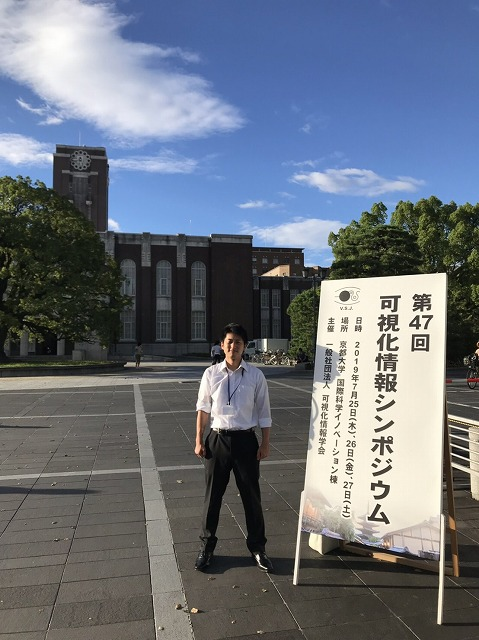
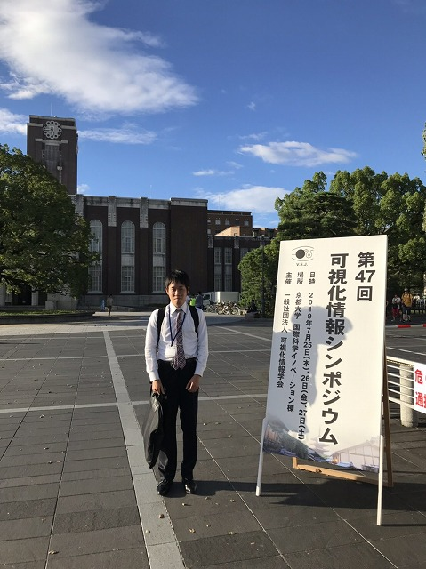
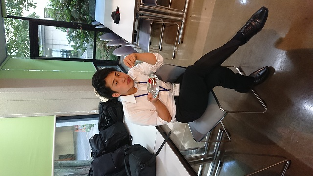
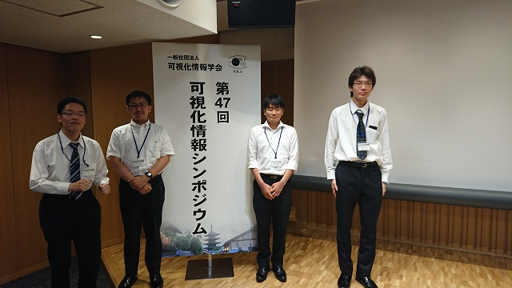

| 可視化情報シンポジウム2019@吉田キャンパス，京都大学 (R01.07.25-27) | |||
去年は一人参加でしたが，今年の可視化シンポは 京都開催ということもあって過去最大の7人（M2が2人，M1が5人）参加です．それぞれM2のT田さんが流体計測の研究で「撹拌性能評価のための回転像静止法によるPIV計測結果の後処理」， N谷さんが光計測の研究で「液滴数密度がホログラム空間周波数解析による液滴衝突検知に及ぼす影響」（受賞）， M1のI田さんが流体計測の研究で「渦中心の検出精度に関する研究」（受賞）， S山さんが音響計測の研究で「埋め込み境界法を用いたタイヤ空洞共鳴現象の研究」， M4さんが光計測の研究で「2台の高速度カメラを用いた位相回復ホログラフィによるプランクトンの観察」， M山さんが光計測の研究で「波長差が多波長位相回復ホログラフィによる粒子計測に及ぼす影響」， Y山さんが流体計測の研究で「PIVを用いた圧力推定手法の任意形状に対する適用」（受賞）という題目で発表しました． 光，音，流体のテーマが全部そろいました．お互いに切磋琢磨して発表練習しており，各自最高のプレゼンはできたようです．全員が受賞できるレベルでしたが3人受賞になりました． |
|||
|

Fの部屋は工学実験の集中講義で使えないので |

M2の部屋で練習 | ||
|

質疑の練習・準備が大事 |

ウチの看板くらいのサイズ | ||
|

ちょっと遠いかな |

デザート美味しい | ||
|

集合写真（M山さんだけ無いやん |
|||